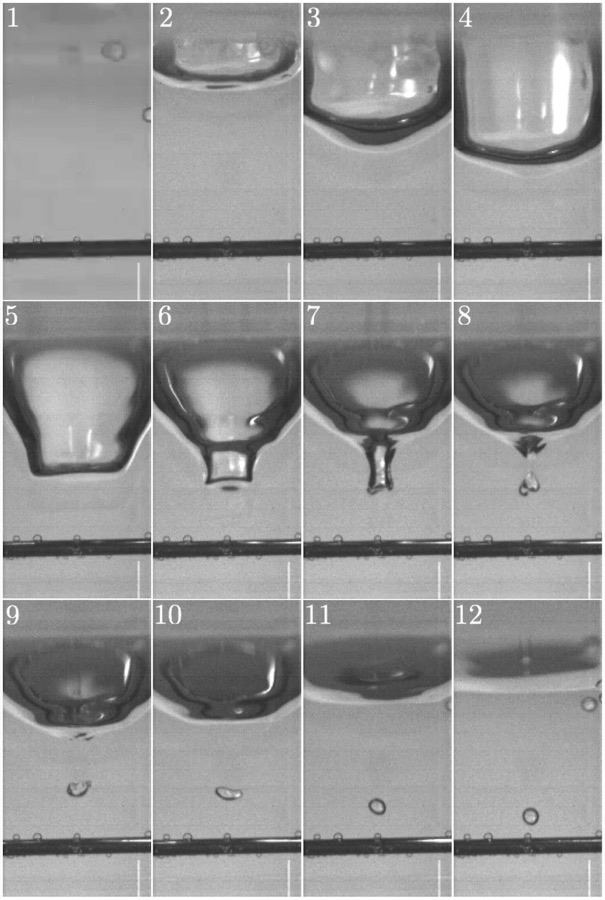
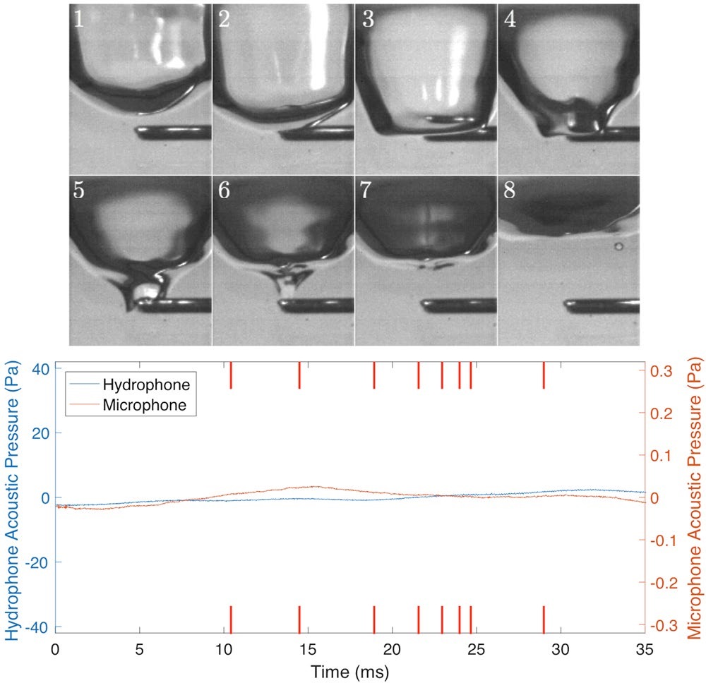

Understanding
Three explainers
The three ideas this whole project rests on, each one animated rather than described. If you understand these, everything else on this site is detail.
1. Where the plink comes from
You would assume the sound of a drop is the splash. It is not, and this was only settled in 2018. Watch what actually happens, and notice when the sound starts.
One drop impact, slowed about 200 times
geometry from Phillips 2018 at 30,000 fps
What you just watched
- The drop punches a crater. Its momentum pushes the water aside and digs a cavity. Phillips measured this at 2.27 mm across for a 4 mm drop.
- The crater recoils. Surface tension and pressure push it back closed, and the walls rush inward at the top.
- The closing walls pinch off a pocket of air. A bubble roughly 0.7 mm across, trapped about 4.5 mm below the surface. This is the instant the sound begins.
- The bubble rings. The air inside is a spring, the water around it is the mass. Squeeze it and it bounces back, overshoots, bounces again, dying away over about two milliseconds.
- Everything after that is silent. The jet, the secondary droplets, the ripples: all visually dramatic and all acoustically nothing.
Two null experiments, both beautifully simple. Put a 0.71 mm rod in the way so the crater cannot close over and trap air: complete silence, with the same visible splash. Add a drop of washing-up liquid so surface tension cannot form the bubble: complete silence again.
Same splash, no bubble, no sound. The bubble is the plink.

Why the pitch depends on size: a bigger bubble has more air to compress, so it is a softer spring, and more water to move, so it is a heavier mass. Both make it slower. That is Minnaert’s 1933 result, and it is what makes the sound informative rather than just a signal. Hear the pitch move with size in the lab.
2. Why the rhythm splits
A drop detaches and does not take all the water with it. The residue left hanging on the nozzle is wobbling, because it has just been snapped off. The next drop grows on top of that wobble.
Below, every drop cycle is drawn on top of the previous ones, all starting from the moment of detachment. The line is how far the drop has stretched down; the orange line is the critical stretch at which it lets go.
Successive drop cycles, overlaid
real model, not a cartoonAt low flow the wobble has died away before the drop is ready to go, so every cycle starts from the same still condition and the traces land exactly on top of one another. Turn the flow up and the drop reaches the critical line while the residue is still moving. Now whether it tips over early or late depends on which way the wobble happened to be going, so consecutive cycles differ, and the difference feeds forward into the next one.
That is memory, and memory is the whole source of the complexity. The controlling quantity is a ratio: how long the wobble lasts, against how long the drop takes to refill. Coullet calls it τf/τd. Nothing else about the system needs to change for chaos to appear; you just need refilling to outpace forgetting.
3. Why the number 4.669 matters
Here is a system with no water in it at all. Rabbits. Next year’s population depends on this year’s, but crowding reduces growth:
- xn
- population in year n, as a fraction of the maximum
- r
- growth rate. The control parameter, playing the role of flow rate
No surface tension. No gravity. No drops. Just multiplication. And yet:
The same cascade, in arithmetic
x → rx(1−x)Compare that with the faucet’s bifurcation diagram. Same shape, same order, same self-similar structure. One is a fluid held together by surface tension; the other is a single line of arithmetic.
The part that should feel strange
Measure how fast the splittings pile up. Take the gap between consecutive splitting points and divide by the next gap:
| Splits to period | Happens at r = | Gap | Ratio to next gap |
|---|---|---|---|
| 2 | 3.000000 | — | — |
| 4 | 3.449490 | 0.449490 | — |
| 8 | 3.544090 | 0.094600 | 4.7515 |
| 16 | 3.564407 | 0.020317 | 4.6562 |
| 32 | 3.568759 | 0.004352 | 4.6684 |
| ∞ | 3.569946 | → 0 | → 4.669201… |
Each splitting arrives 4.669 times sooner than the one before. Feigenbaum found this in 1975 on a pocket calculator, and then found the thing that made it famous: the number does not depend on the equation. Change the formula, keep the single-humped shape, and you get 4.669 again. Rabbits, a laser, a driven pendulum, a convecting fluid, a heartbeat, a dripping tap.
4.669 contains no surface tension, no viscosity, no gravity. It is a pure number like π, and it falls out of systems that share no physics at all. What it says is that the route to chaos has a structure independent of what is travelling it. Nature reuses the same machinery.
Measuring it in a laser needs a laser lab. In a convecting fluid, a thermal chamber. In a tap, a stopwatch. That is why Robert Shaw abandoned a nearly finished doctorate in 1977 to go and study dripping.
And the open door: nobody has extracted 4.669 from a real faucet. Sekatchev tried with 1.17 million drops and could not, because his cascade was not clean enough to isolate the splittings, partly because his detector could not resolve intervals below 25 ms. That is a measurement problem, and a sharper clock is exactly what this project is building.